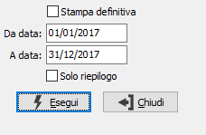

Stampa registro cronologico
Il programma effettua la stampa, di prova o definitiva, del registro cronologico. La stampa di prova può essere effettuata più volte, mentre la stampa definitiva una sola volta.

STAMPA DEFINITIVA check box per definire il tipo di stampa che si vuole effettuare. Valori possibili:
-
DA DATA: indicare la data dalla quale deve iniziare la stampa. Viene proposta automaticamente la data immediatamente successiva a quella dell’ultima stampa definitiva. In caso di stampa definitiva, si consiglia vivamente di non modificare la data proposta automaticamente, per evitare possibili “omissioni”.
A DATA: indicare la data alla quale deve terminare la stampa.
SOLO RIEPILOGO: check box, valido per la stampa di prova, che consente di stampare solo il riepilogo dei totali (casella con segno di spunta) oppure anche i singoli movimenti (casella vuota).
Inseriti tutti i parametri, la pressione del bottone Esegui determina l’esecuzione della stampa.
 In caso di stampa definitiva, al termine della stampa viene visualizzato il messaggio illustrato a lato. Ciò per ovviare all’eventuale, anche se infrequente, evento di rottura di pagine o di mancato avanzamento della carta, soprattutto in caso di stampa tramite stampanti ad aghi.
In caso di stampa definitiva, al termine della stampa viene visualizzato il messaggio illustrato a lato. Ciò per ovviare all’eventuale, anche se infrequente, evento di rottura di pagine o di mancato avanzamento della carta, soprattutto in caso di stampa tramite stampanti ad aghi.
Se la stampa si è conclusa positivamente, è comunque ovviamente necessario confermare premendo il bottone OK.